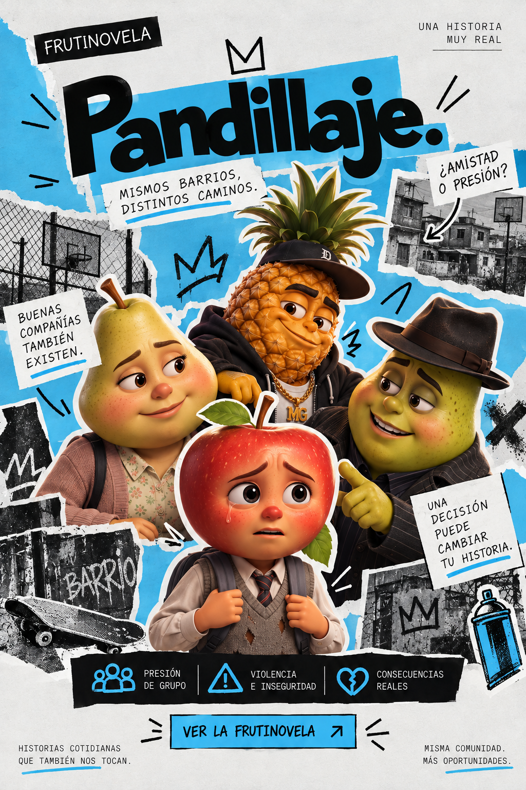
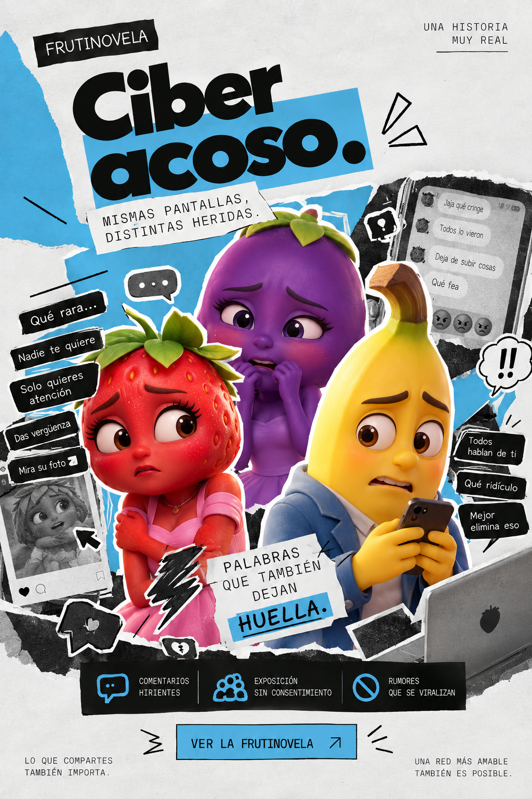

Sociedad y comunidad
Pandillaje
Comprende los factores que influyen en el pandillaje juvenil, sus consecuencias y la importancia de crear oportunidades de prevención y apoyo comunitario.
Explorar Pandillaje ↗CHANGE LAB / ARCHIVO SOCIAL
Explora las historias detrás de los problemas que afectan nuestra sociedad. Cada tema es una oportunidad para aprender, cuestionar y descubrir nuevas perspectivas.
ÍNDICE / TEMÁTICAS
Combina palabras clave y categoría para encontrar un tema.
Tres frutinovelas disponibles para ver, comprender y reflexionar.

Sociedad y comunidad
Comprende los factores que influyen en el pandillaje juvenil, sus consecuencias y la importancia de crear oportunidades de prevención y apoyo comunitario.
Explorar Pandillaje ↗Consumo y medio ambiente
Descubre cómo la producción y el consumo acelerado de ropa influyen en el medio ambiente y en las condiciones laborales.
Explorar Fast fashion ↗
Convivencia digital
Aprende a reconocer las conductas de acoso en internet, comprender sus consecuencias y promover espacios digitales más seguros.
Explorar Ciberacoso ↗No encontramos temas que coincidan con tu búsqueda.
Prueba otra palabra, cambia de categoría o restablece los filtros.
MIRAR / COMPRENDER / CUESTIONAR
Informarnos nos permite comprender mejor nuestro entorno y reconocer que nuestras decisiones también pueden generar un impacto.
Conoce Change Lab